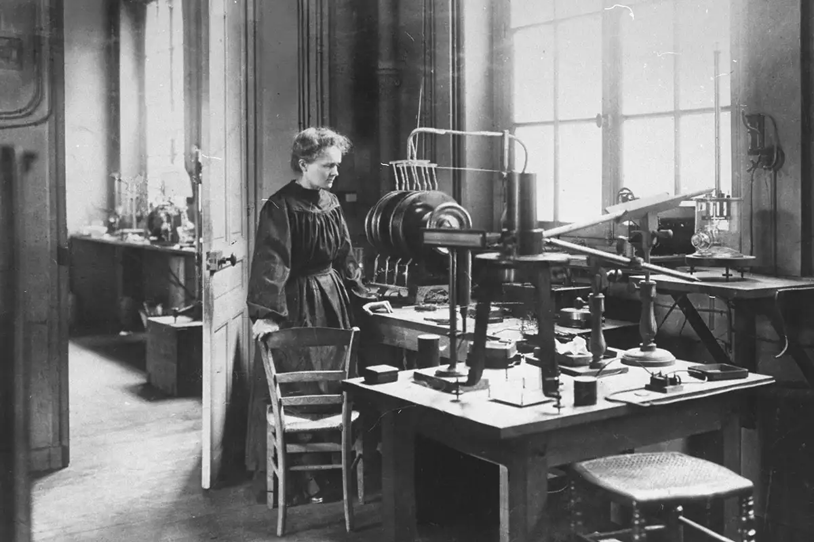
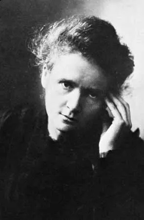

Biography

Marie Curie was born on November 7, 1867, in Warsaw, Poland.
She was a physicist and chemist who conducted pioneering research on radioactivity. She was the first woman to win a Nobel Prize and the only person to win Nobel Prizes in two different scientific fields (Physics and Chemistry).
Nothing in life is to be feared, it is only to be understood. Now is the time to understand more, so that we may fear less. Marie Courie
Achievements
- Discovery of Polonium and Radium
- First woman to win a Nobel Prize
- Only person to win Nobel Prizes in two different scientific fields
- Founder of the Curie Institutes in Paris and Warsaw
Fun Facts
- Marie Curie's notebooks are still radioactive and will be for another 1500 years.
- She used to carry test tubes of radium in her pockets.
- Marie Curie was the first woman to become a professor at the University of Paris.